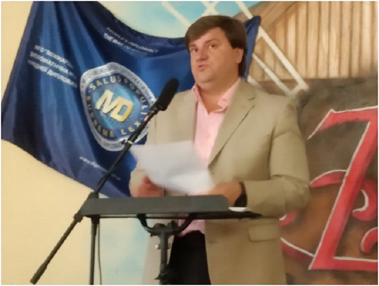
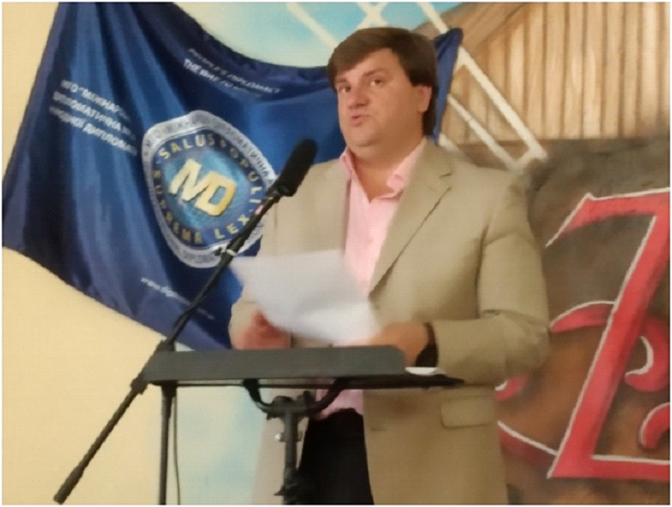

Біографія
 

Андрій Вікторович Козка передчасно відійшов у кращий із світів 15 грудня 2024 року. Це був відомий вчений, дослідник непізнанного, кандидат юридичних наук, член-кореспондент Міжнародної академії наук і інформаційних технологій, науковий працівник лабораторії радіо- та оптичної голографії ХНУ ім. В.Н. Каразіна, заступник генерального директора Інституту Голографії АН ПРЕ.
Уродженець Харкова, мав як технічну, так і юридичну освіту. Займатися проблемою позаземних цивілізацій та НЛО почав у 2000 році — в рамках проекту «Природні катаклізми та шляхи їх запобігання» як юрист-аналітик. У листопаді-грудні 2001 року організував лекторій в міській бібліотеці ім. Белінського, згодом — проект «Феномен НЛО та Уфологія» у Харківському Планетарії ім. Ю.А. Гагаріна; певний час керував Юридичним Центром із Прав Людини у Харкові.
Автор десятків наукових та науково-популярних статей, написав 12 книг про дослідження незвичайних феноменів та аномалій у співавторстві з Галиною Железняк. Книги видавались у серії «Опасно: Аномальная зона» (Книжковий клуб «Клуб сімейного дозвілля», Харків-Бєлгород, 2006–2009 рр.).
Людина з великої літери, Андрій Козка був всесторонньо розвинутим, спектр його досліджень охоплював як непізнане, так і культурологію, технічні інновації, екологію, релігієзнавство тощо. Учасник багатьох дослідницьких і пошукових експедицій в Україні та за кордоном.
Талановитий педагог, популяризатор науки, викладав у ПВНЗ «Університет Сучасних Знань» (м. Київ), регулярно читав публічні лекції із історії, ведичних знань, космології та інших актуальних тем, глибоко досліджуючи їх самостійно. Неодноразово виступав на телебаченні, шпальтах газет, журналів, був членом редакційної ради журналу «Оксамит» (Київ).
Мав численні таланти — чудовий музикант, поет, композитор, клав свою та чужу поезію на музику; грав на декількох інструментах — гітарі, сітарі, мріданзі. Володів глибокими знаннями із древніх текстів Бхагават-гіта, Шрімад-бхагаватам та інших, вивчав і пропагував індоарійську спадщину України. Був надзвичайно доброю та чуйною людиною, сповідував ведичні цінності життя.
Був лауреатом міжнародних наукових конкурсів, преміантом нагород.
В останні роки життя, одночасно лікуючи батьків і лікуючись сам за кордоном, Андрій Козка паралельно працював у Geneva International Centre for Humanitarian Demining (GICHD), виступав експертом програми «Science Diplomacy EU Madrid Declaration» від України, представляв філію Науково-дослідного інституту українознавства у Швейцарії. Активно приймав участь у діяльності УНДЦА «Зонд» до самих останніх днів.
Це велика втрата для вітчизняної аномалістики. Ми втратили не тільки вченого, але вірного друга, брата. Висловлюємо щирі співчуття батькам, близьким, знайомим і колегам А.В. Козки. Його світла пам'ять тепер житиме у наших справах, а смолоскип пізнання ми пронесемо крізь усі буревії!
Зв'язок
Із приводу доповнення сторінки, якщо Ви знали Андрія Вікторовича Козку або/та у Вас збереглися його унікальні матеріали, творчі доробки, фотографії — будь ласка звертайтеся на офіційну електронну пошту УНДЦА «Зонд»: srcaa@zond.kiev.ua
Дипломи та нагороди
Книги
Книги видані у серії «Опасно: Аномальная зона» (Книжковий клуб «Клуб сімейного дозвілля», 2006–2009). Співавтор — Галина Железняк.
Чудеса и катастрофы Вселенной
📥 Завантажити FB2НЛО — секретные материалы
📥 Завантажити FB2Параллельные миры
📥 Завантажити FB2Пришельцы среди нас
📥 Завантажити FB2Пророчества великих
📥 Завантажити FB2Расшифрованные космические знания
📥 Завантажити FB2Религиозные чудеса и феномены
📥 Завантажити FB2Тайны человеческой психики
📥 Завантажити FB2Тайны исчезнувших цивилизаций
📥 Завантажити FB2Загадочные места планеты
📥 Завантажити FB2Загадочные существа
📥 Завантажити FB2Загадочные явления природы
📥 Завантажити FB2Наукові статті
Інноваційний лідар для екологічного моніторингу приземного шару атмосфери, феноменів кульових блискавок та інших аномальних явищ
📄 Завантажити DOCЦивілізація та Україна
📄 Завантажити DOCXПро цінність людського життя
🔗 Читати на oksamyt.orgМудрість Сунь-Цзи та Махабхарати як актуальна допомога Україні у війні з агресором
🔗 Читати на spilnota.net.uaМузика
Музичні композиції на вірші А. Білика у виконанні та аранжуванні А.В. Козки.